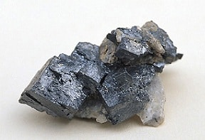

Principais características do elemento
A prata é um metal branco, brilhante, maleável e dúctil, com a maior condutividade elétrica e térmica entre os metais. Além de valorizada como reserva de valor, é fundamental para tecnologias sustentáveis e tem grande importância cultural e histórica.
Nome e símbolo do elemento químico
Prata (Ag)
Estado físico em temperatura ambiente
Sólido
Aparência ou coloração
Metal com coloração prateada brilhante
Principais propriedades
Possui a maior condutividade elétrica entre todos os elementos da natureza.
Imagem do elemento químico

História da descoberta
A história da prata remonta aos tempos antigos, quando civilizações como os egípcios, gregos e romanos a usavam para criar moedas, utensílios e ornamentos.
Ocorrência na natureza
Onde o elemento pode ser encontrado
A prata é encontrada na crosta terrestre, sendo o 65º elemento mais abundante.
Forma de ocorrência
Pode ocorrer na forma pura (livre) ou combinada com outros elementos em ligas metálicas.
Principais minerais, substâncias ou fontes
- Argentita: sulfeto de prata (Ag₂S)
- Clorargirita: cloreto de prata (AgCl)
- Ligas metálicas com cobre, chumbo, níquel, ouro ou zinco
Uso no cotidiano
Eletrônica e tecnologia
Usada em contatos elétricos, circuitos impressos, smartphones, computadores, painéis solares e veículos elétricos, devido à excelente condutividade elétrica e térmica. Conectores e interruptores de aparelhos eletrônicos frequentemente contêm prata para garantir eficiência e durabilidade.
Medicina
Empregada em curativos antibacterianos, pomadas para queimaduras e instrumentos cirúrgicos, aproveitando suas propriedades antimicrobianas para prevenir infecções.
Joalheria e decoração
A prata esterlina (liga com 92,5% de prata) é muito usada em anéis, colares, pulseiras, talheres e objetos decorativos, valorizados por sua beleza e resistência.
Óptica
Reveste espelhos de alta precisão e telescópios, pois é o metal mais refletivo da luz visível, garantindo imagens claras e nítidas.
Fotografia
Sais de prata são utilizados em filmes fotográficos e radiográficos, aproveitando sua sensibilidade à luz.
Investimentos
Comercializada em barras e moedas como reserva de valor e ativo financeiro, é uma forma de proteção contra a inflação e instabilidades econômicas.
Importância ou riscos
Sua importância vai do uso industrial ao valor cultural, influenciando tradições e artefatos ao longo da história. Em contrapartida, a exposição prolongada à prata pode causar argiria, condição que altera a coloração da pele, e o contato com seus compostos pode provocar irritações, exigindo cuidados no manuseio.